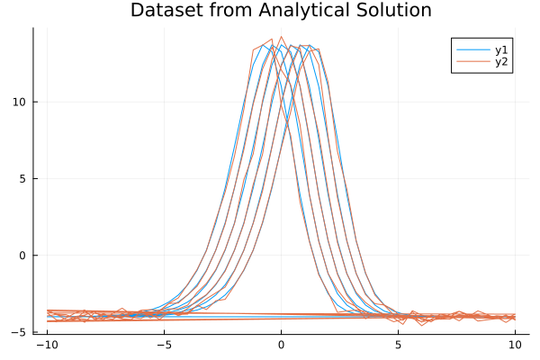
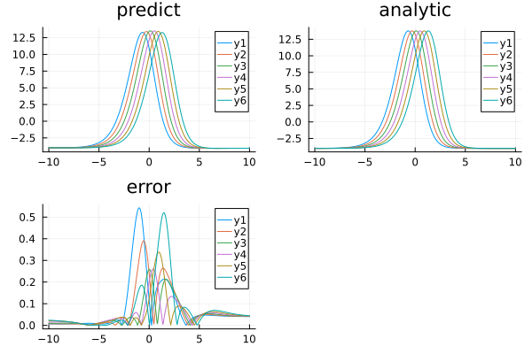

Using ahmc_bayesian_pinn_pde with the BayesianPINN Discretizer for the Kuramoto–Sivashinsky equation
Consider the Kuramoto–Sivashinsky equation:
\[∂_t u(x, t) + u(x, t) ∂_x u(x, t) + \alpha ∂^2_x u(x, t) + \beta ∂^3_x u(x, t) + \gamma ∂^4_x u(x, t) = 0 \, ,\]
where $\alpha = \gamma = 1$ and $\beta = 4$. The exact solution is:
\[u_e(x, t) = 11 + 15 \tanh \theta - 15 \tanh^2 \theta - 15 \tanh^3 \theta \, ,\]
where $\theta = t - x/2$ and with initial and boundary conditions:
\[\begin{align*} u( x, 0) &= u_e( x, 0) \, ,\\ u( 10, t) &= u_e( 10, t) \, ,\\ u(-10, t) &= u_e(-10, t) \, ,\\ ∂_x u( 10, t) &= ∂_x u_e( 10, t) \, ,\\ ∂_x u(-10, t) &= ∂_x u_e(-10, t) \, . \end{align*}\]
With Bayesian Physics-Informed Neural Networks, here is an example of using BayesianPINN discretization with ahmc_bayesian_pinn_pde :
using NeuralPDE, Lux, ModelingToolkit, LinearAlgebra, AdvancedHMC
using Distributions
import DomainSets: Interval
using IntervalSets: leftendpoint, rightendpoint
using Plots, MonteCarloMeasurements
@parameters x, t, α
@variables u(..)
Dt = Differential(t)
Dx = Differential(x)
Dx2 = Differential(x)^2
Dx3 = Differential(x)^3
Dx4 = Differential(x)^4
# α = 1
β = 4
γ = 1
eq = Dt(u(x, t)) + u(x, t) * Dx(u(x, t)) + α * Dx2(u(x, t)) + β * Dx3(u(x, t)) +
γ * Dx4(u(x, t)) ~ 0
u_analytic(x, t; z = -x / 2 + t) = 11 + 15 * tanh(z) - 15 * tanh(z)^2 - 15 * tanh(z)^3
du(x, t; z = -x / 2 + t) = 15 / 2 * (tanh(z) + 1) * (3 * tanh(z) - 1) * sech(z)^2
bcs = [u(x, 0) ~ u_analytic(x, 0),
u(-10, t) ~ u_analytic(-10, t),
u(10, t) ~ u_analytic(10, t),
Dx(u(-10, t)) ~ du(-10, t),
Dx(u(10, t)) ~ du(10, t)]
# Space and time domains
domains = [x ∈ Interval(-10.0, 10.0),
t ∈ Interval(0.0, 1.0)]
# Discretization
dx = 0.4;
dt = 0.2;
# Function to compute analytical solution at a specific point (x, t)
function u_analytic_point(x, t)
z = -x / 2 + t
return 11 + 15 * tanh(z) - 15 * tanh(z)^2 - 15 * tanh(z)^3
end
# Function to generate the dataset matrix
function generate_dataset_matrix(domains, dx, dt)
x_values = -10:dx:10
t_values = 0.0:dt:1.0
dataset = []
for t in t_values
for x in x_values
u_value = u_analytic_point(x, t)
push!(dataset, [u_value, x, t])
end
end
return vcat([data' for data in dataset]...)
end
datasetpde = [generate_dataset_matrix(domains, dx, dt)]
# noise to dataset
noisydataset = deepcopy(datasetpde)
noisydataset[1][:, 1] = noisydataset[1][:, 1] .+
randn(size(noisydataset[1][:, 1])) .* 5 / 100 .*
noisydataset[1][:, 1]306-element Vector{Float64}:
-3.9443527200797726
-3.8418567758016415
-4.192076711934175
-4.119863247945516
-3.9437299190795154
-4.054695499997039
-4.180999882646246
-3.7723328992310425
-3.4400659906459063
-3.856471120402399
⋮
-4.064565744120555
-4.1538744196447155
-3.8996780070550394
-4.00450094583546
-3.904386714542351
-3.9828858495401507
-4.118632354037817
-3.8896613482897213
-4.218895586022975Plotting dataset, added noise is set at 5%.
plot(datasetpde[1][:, 2], datasetpde[1][:, 1], title = "Dataset from Analytical Solution")
plot!(noisydataset[1][:, 2], noisydataset[1][:, 1])
# Neural network
chain = Chain(Dense(2, 8, tanh), Dense(8, 8, tanh), Dense(8, 1))
discretization = NeuralPDE.BayesianPINN([chain],
GridTraining([dx, dt]), param_estim = true, dataset = [noisydataset, nothing])
@named pde_system = PDESystem(eq,
bcs,
domains,
[x, t],
[u(x, t)],
[α],
initial_conditions = Dict([α => 0.5]))
sol1 = ahmc_bayesian_pinn_pde(pde_system,
discretization;
draw_samples = 100, Kernel = AdvancedHMC.NUTS(0.8),
bcstd = [0.2, 0.2, 0.2, 0.2, 0.2],
phystd = [1.0], l2std = [0.05], param = [Distributions.LogNormal(0.5, 2)],
priorsNNw = (0.0, 10.0),
saveats = [1 / 100.0, 1 / 100.0], progress = true)BPINNsolution{NeuralPDE.BPINNstats{MCMCChains.Chains{Float64, AxisArrays.AxisArray{Float64, 3, Base.ReshapedArray{Float64, 3, LinearAlgebra.Adjoint{Float64, Matrix{Float64}}, Tuple{Base.MultiplicativeInverses.SignedMultiplicativeInverse{Int64}}}, Tuple{AxisArrays.Axis{:iter, StepRange{Int64, Int64}}, AxisArrays.Axis{:var, Vector{Symbol}}, AxisArrays.Axis{:chain, UnitRange{Int64}}}}, Missing, @NamedTuple{parameters::Vector{Symbol}}, @NamedTuple{}}, Vector{Vector{Float64}}, Vector{NamedTuple}}, Vector{Vector{MonteCarloMeasurements.Particles{Float64, 33}}}, Vector{ComponentArrays.ComponentVector{MonteCarloMeasurements.Particles{Float64, 34}, Vector{MonteCarloMeasurements.Particles{Float64, 34}}, Tuple{ComponentArrays.Axis{(layer_1 = ViewAxis(1:24, Axis(weight = ViewAxis(1:16, ShapedAxis((8, 2))), bias = ViewAxis(17:24, Shaped1DAxis((8,))))), layer_2 = ViewAxis(25:96, Axis(weight = ViewAxis(1:64, ShapedAxis((8, 8))), bias = ViewAxis(65:72, Shaped1DAxis((8,))))), layer_3 = ViewAxis(97:105, Axis(weight = ViewAxis(1:8, ShapedAxis((1, 8))), bias = ViewAxis(9:9, Shaped1DAxis((1,))))))}}}}, Vector{MonteCarloMeasurements.Particles{Float64, 34}}, Vector{Matrix{Float64}}}(NeuralPDE.BPINNstats{MCMCChains.Chains{Float64, AxisArrays.AxisArray{Float64, 3, Base.ReshapedArray{Float64, 3, LinearAlgebra.Adjoint{Float64, Matrix{Float64}}, Tuple{Base.MultiplicativeInverses.SignedMultiplicativeInverse{Int64}}}, Tuple{AxisArrays.Axis{:iter, StepRange{Int64, Int64}}, AxisArrays.Axis{:var, Vector{Symbol}}, AxisArrays.Axis{:chain, UnitRange{Int64}}}}, Missing, @NamedTuple{parameters::Vector{Symbol}}, @NamedTuple{}}, Vector{Vector{Float64}}, Vector{NamedTuple}}(MCMC chain (100×106×1 reshape(adjoint(::Matrix{Float64}), 100, 106, 1) with eltype Float64), [[1.9427945245066929, 1.758282235202163, -1.3587096047859584, -1.2206342633163985, -0.07873447971122217, 0.02835109555034321, 1.7597941289656185, 0.05947253386154132, 0.08781522023020696, 1.9186919253649763 … 0.5294427214055206, -0.044024576714058614, 0.28757557967743563, 0.40833979666806863, -0.5672450071395195, 0.4400943391888188, -0.3520051109943275, 0.47423567028669, 0.2005606513752965, 0.4997959527005592], [1.9427945245066929, 1.758282235202163, -1.3587096047859584, -1.2206342633163985, -0.07873447971122217, 0.02835109555034321, 1.7597941289656185, 0.05947253386154132, 0.08781522023020696, 1.9186919253649763 … 0.5294427214055206, -0.044024576714058614, 0.28757557967743563, 0.40833979666806863, -0.5672450071395195, 0.4400943391888188, -0.3520051109943275, 0.47423567028669, 0.2005606513752965, 0.4997959527005592], [1.9427945245066929, 1.758282235202163, -1.3587096047859584, -1.2206342633163985, -0.07873447971122217, 0.02835109555034321, 1.7597941289656185, 0.05947253386154132, 0.08781522023020696, 1.9186919253649763 … 0.5294427214055206, -0.044024576714058614, 0.28757557967743563, 0.40833979666806863, -0.5672450071395195, 0.4400943391888188, -0.3520051109943275, 0.47423567028669, 0.2005606513752965, 0.4997959527005592], [1.9405419936234245, 1.7563597497661336, -1.357461678153153, -1.2193076226826816, -0.08306753140389228, 0.02758601431789357, 1.7567039090240233, 0.060538279885257666, 0.08717832246436891, 1.9193169854928442 … 0.5308568202080343, -0.04582256832395376, 0.2875044984288158, 0.4079904771381407, -0.5664939672844322, 0.4333759591872176, -0.3503793157768228, 0.47428320406325264, 0.1987935074787095, 0.4998264757927188], [1.9370977628294972, 1.754065336835657, -1.3552294346631693, -1.2176119436775843, -0.08983563910502965, 0.026598527457617836, 1.7524534530439313, 0.0627102936343089, 0.08641955047779619, 1.9205877551215738 … 0.5325228980194078, -0.04902482831037539, 0.28772051347829164, 0.40702740019219286, -0.5648575226281561, 0.42437566710030356, -0.34748983846402315, 0.4737959627302213, 0.1955908347270846, 0.49978534591792456], [1.92605267342124, 1.7464441913135704, -1.3480595025988287, -1.212176343948352, -0.11062318638868344, 0.025617583328257, 1.7401844677490792, 0.06964620107999893, 0.08557308910892529, 1.923458026610691 … 0.5320286017152374, -0.06200922482530724, 0.29044528744026565, 0.40282563781562786, -0.5591601480398264, 0.4093939260640149, -0.33508082702235276, 0.47171904325487557, 0.18090536333814694, 0.4998024601401621], [1.88953913767402, 1.7316900018662431, -1.3393711333100287, -1.1992739194941673, -0.18725411873869224, 0.043171302863459354, 1.7145775792079925, 0.08689532946026164, 0.09105199799830856, 1.917110775078503 … 0.48256237019113746, -0.1148024508262852, 0.31599118067982, 0.3844450894847233, -0.5330574542041218, 0.44876395457295437, -0.2817020861958409, 0.46239516089345684, 0.08770803857292905, 0.5013026776466273], [1.8840566289481044, 1.735575816193463, -1.3425004671308143, -1.1949883131845642, -0.20717119989521993, 0.04555043309243737, 1.7088016921207954, 0.08618978044485927, 0.09543104773896427, 1.9115783228195138 … 0.4733580993466668, -0.11814005346792383, 0.317593275669354, 0.38818145423084127, -0.5318930930092383, 0.45455407947471094, -0.27686601512667963, 0.4661137038114469, 0.05945206569708089, 0.5016211864737241], [1.875956686701126, 1.743852764306093, -1.347356897822915, -1.1807125138850618, -0.2589660386291143, 0.05299645496725394, 1.694481132515789, 0.08902514900517033, 0.10671279976195122, 1.9026131280982472 … 0.44689359969132586, -0.1330632492290652, 0.32429080648438446, 0.4009708720500066, -0.5237406947607645, 0.4754504315516821, -0.26232350663745846, 0.4795797254535935, -0.03557209061302191, 0.5004016170114302], [1.875956686701126, 1.743852764306093, -1.347356897822915, -1.1807125138850618, -0.2589660386291143, 0.05299645496725394, 1.694481132515789, 0.08902514900517033, 0.10671279976195122, 1.9026131280982472 … 0.44689359969132586, -0.1330632492290652, 0.32429080648438446, 0.4009708720500066, -0.5237406947607645, 0.4754504315516821, -0.26232350663745846, 0.4795797254535935, -0.03557209061302191, 0.5004016170114302] … [0.23370617148521142, 0.5515166166027473, -0.5001410498047137, -0.4127280217471159, -0.4207243356023937, 0.6056716012952444, 0.5205321331374325, 0.6367100465721833, -0.2794604389702178, 1.1732679621386821 … 0.4087121373063102, 0.4358005641807183, 5.359006123346403, 4.4277607062397335, -3.0087381621548808, 4.1946837023317185, 1.8772925038442583, 5.347267051539118, 1.2403818129517157, 0.9936326238233018], [0.21196825743747236, 0.5226462759472066, -0.47292149906143915, -0.41296216618596965, -0.4235763803991723, 0.5960529013806527, 0.49335862579631234, 0.6116090082073212, -0.2651466814470621, 1.0694228759363242 … 0.4488608206033742, 0.7233256877820093, 5.4281550117786335, 4.713800959217978, -2.9677826981345925, 4.115804332144534, 2.0601203024012813, 5.3942719037809255, 1.3792437971683584, 0.9620868790989263], [0.2812205488194546, 0.4654845029574845, -0.45451483072884713, -0.3121463620928749, -0.4177840329982444, 0.6777956506850301, 0.438915466475098, 0.6065235348453559, -0.37092262476468774, 1.10820158099829 … 0.5242507508359183, 0.6039949711204529, 5.255806825999649, 4.825286831411621, -3.1364499955688165, 4.262697249958458, 1.9082034979319595, 5.680833916134098, 1.3892930780813562, 0.9504244435636467], [0.2938025407289879, 0.5338014490304631, -0.4897607213236241, -0.3272280651237008, -0.41033330029560006, 0.6244518692319185, 0.47007610493623075, 0.6047546027101659, -0.42080572424280377, 1.1957821948461356 … 0.6339569339870331, 0.6740539175530947, 5.288675059793414, 4.688144726605878, -3.2405968583861604, 4.308725636632374, 1.810579749168869, 5.546227648098738, 1.3830940530495135, 0.9725035741319058], [0.2817710390974064, 0.4416335608807364, -0.46100796737767413, -0.3365197282880492, -0.41059758897941445, 0.697879004756312, 0.42540006650083123, 0.6021735806041205, -0.2253235511892291, 1.3307804478254677 … 0.7575719965055974, 0.7409172641729851, 5.520794025412365, 4.823176458858794, -3.3063937706014777, 4.081846370690005, 1.8932245818413895, 5.485702922423313, 1.2820800546996016, 0.9696908250943665], [0.3154005876930376, 0.48673902644831574, -0.4906182500797536, -0.30754364967627174, -0.4137904528834506, 0.6965902514667802, 0.39776610145967184, 0.6183544030650996, -0.30020802414407044, 1.3668190644956835 … 0.5780457137092258, 0.5111466164385817, 5.410990145139971, 4.656371655572119, -3.221180238412779, 4.076047989203855, 1.910709873822569, 5.320281604479993, 1.2149679488352556, 0.9710027311258321], [0.31390190830323117, 0.4549540081500423, -0.497114951189525, -0.32740942085113944, -0.39721495077209057, 0.6883693273944707, 0.3754995421234696, 0.5887405595569506, -0.28556191096608813, 1.3572204116515527 … 0.6523526730746948, 0.5327046675408217, 5.365158438870094, 4.551540518186015, -3.199365040273086, 3.99992880348786, 1.9266835983910349, 5.298169940932425, 1.1686914032103453, 0.9594229324889281], [0.28543259451337505, 0.5253479528177948, -0.5061484238617786, -0.3463772915132235, -0.4041993603304832, 0.7403126145560499, 0.4062085236267118, 0.6040744984292703, -0.17735198288534554, 1.4683387473258205 … 0.5072835617460298, 0.6143995969859396, 5.277473486470357, 4.516511374312051, -3.217128132814742, 3.9959863005900935, 1.7957423107348807, 5.243930710977385, 1.2541790007704148, 0.9720338147608153], [0.3040464418204681, 0.5131712079412524, -0.490022596566292, -0.3445675876325734, -0.40334435620948056, 0.6787802175530184, 0.40095453053266367, 0.5964743301066302, -0.3006177858301024, 1.4882068255723404 … 0.460414788140991, 0.6441952951936339, 5.311943427293744, 4.562887625460855, -3.0701354546948703, 3.868283381456954, 1.7558428323631805, 5.295816540769395, 1.3139931059909291, 0.9657839359223763], [0.31702997821445045, 0.5191531569851637, -0.49282655204701664, -0.3693642387196061, -0.40432988997620434, 0.7312459253404591, 0.3771493882937983, 0.5882956533643634, -0.32803071622825486, 1.6671638152999357 … 0.7434098896062845, 0.6584683446299354, 5.53649559628833, 4.847760820681635, -3.0174977424876026, 3.7995660029858023, 1.8035093601675696, 5.14442542379628, 1.5817407004165511, 0.9545169726089129]], NamedTuple[(n_steps = 1, is_accept = true, acceptance_rate = 1.0, log_density = -2.0092424212145407e6, hamiltonian_energy = 2.3217063287774255e6, hamiltonian_energy_error = -137302.025041237, max_hamiltonian_energy_error = -137302.025041237, tree_depth = 1, numerical_error = false, step_size = 0.0001953125, nom_step_size = 0.0001953125, is_adapt = true), (n_steps = 1, is_accept = true, acceptance_rate = 0.0, log_density = -2.0092424212145407e6, hamiltonian_energy = 2.0092919089172373e6, hamiltonian_energy_error = 0.0, max_hamiltonian_energy_error = 2.250404253215483e9, tree_depth = 0, numerical_error = true, step_size = 0.0028096699405814013, nom_step_size = 0.0028096699405814013, is_adapt = true), (n_steps = 1, is_accept = true, acceptance_rate = 0.0, log_density = -2.0092424212145407e6, hamiltonian_energy = 2.0092922348759836e6, hamiltonian_energy_error = 0.0, max_hamiltonian_energy_error = 23540.006867306773, tree_depth = 0, numerical_error = true, step_size = 0.00047483737194182476, nom_step_size = 0.00047483737194182476, is_adapt = true), (n_steps = 3, is_accept = true, acceptance_rate = 1.0, log_density = -1.972681951008138e6, hamiltonian_energy = 2.008923289843644e6, hamiltonian_energy_error = -371.1711666279007, max_hamiltonian_energy_error = -371.1711666279007, tree_depth = 2, numerical_error = false, step_size = 4.683425889422472e-5, nom_step_size = 4.683425889422472e-5, is_adapt = true), (n_steps = 3, is_accept = true, acceptance_rate = 1.0, log_density = -1.930725497640598e6, hamiltonian_energy = 1.9720670107480646e6, hamiltonian_energy_error = -657.2690119089093, max_hamiltonian_energy_error = -657.2690119089093, tree_depth = 2, numerical_error = false, step_size = 6.334617362264743e-5, nom_step_size = 6.334617362264743e-5, is_adapt = true), (n_steps = 7, is_accept = true, acceptance_rate = 1.0, log_density = -1.8683106652299054e6, hamiltonian_energy = 1.9295036546459044e6, hamiltonian_energy_error = -1274.4289840869606, max_hamiltonian_energy_error = -1274.4289840869606, tree_depth = 3, numerical_error = false, step_size = 9.906358957991161e-5, nom_step_size = 9.906358957991161e-5, is_adapt = true), (n_steps = 15, is_accept = true, acceptance_rate = 1.0, log_density = -1.7929453476759563e6, hamiltonian_energy = 1.86771829815842e6, hamiltonian_energy_error = -644.0149878566153, max_hamiltonian_energy_error = -644.0149878566153, tree_depth = 4, numerical_error = false, step_size = 0.00016862818293039464, nom_step_size = 0.00016862818293039464, is_adapt = true), (n_steps = 3, is_accept = true, acceptance_rate = 1.0, log_density = -1.781153313274451e6, hamiltonian_energy = 1.7927872634804586e6, hamiltonian_energy_error = -208.9504735241644, max_hamiltonian_energy_error = -208.9504735241644, tree_depth = 2, numerical_error = false, step_size = 0.00030174937000569495, nom_step_size = 0.00030174937000569495, is_adapt = true), (n_steps = 3, is_accept = true, acceptance_rate = 1.0, log_density = -1.751299847903137e6, hamiltonian_energy = 1.7807934884486392e6, hamiltonian_energy_error = -428.33279158896767, max_hamiltonian_energy_error = -428.33279158896767, tree_depth = 2, numerical_error = false, step_size = 0.0005556325590779451, nom_step_size = 0.0005556325590779451, is_adapt = true), (n_steps = 2, is_accept = true, acceptance_rate = 2.2607275685397e-311, log_density = -1.751299847903137e6, hamiltonian_energy = 1.7513594517278443e6, hamiltonian_energy_error = 0.0, max_hamiltonian_energy_error = 1285.8090733636636, tree_depth = 1, numerical_error = true, step_size = 0.00103857720728627, nom_step_size = 0.00103857720728627, is_adapt = true) … (n_steps = 1023, is_accept = true, acceptance_rate = 0.9172956435003051, log_density = -3892.3973007813265, hamiltonian_energy = 3946.807052539628, hamiltonian_energy_error = -0.05483152168608285, max_hamiltonian_energy_error = -0.9093685633420137, tree_depth = 10, numerical_error = false, step_size = 0.00023592537103546052, nom_step_size = 0.00023592537103546052, is_adapt = false), (n_steps = 1023, is_accept = true, acceptance_rate = 0.4676519044636826, log_density = -3884.078812634468, hamiltonian_energy = 3938.0822698763086, hamiltonian_energy_error = 0.6317090970837853, max_hamiltonian_energy_error = 2.6625772337361013, tree_depth = 10, numerical_error = false, step_size = 0.00023592537103546052, nom_step_size = 0.00023592537103546052, is_adapt = false), (n_steps = 1023, is_accept = true, acceptance_rate = 0.8962095321432947, log_density = -3875.070238860734, hamiltonian_energy = 3936.5693711894305, hamiltonian_energy_error = 0.5359651031881185, max_hamiltonian_energy_error = -1.5410372681380977, tree_depth = 10, numerical_error = false, step_size = 0.00023592537103546052, nom_step_size = 0.00023592537103546052, is_adapt = false), (n_steps = 1023, is_accept = true, acceptance_rate = 0.9583414402506909, log_density = -3863.838198213736, hamiltonian_energy = 3921.0143524892064, hamiltonian_energy_error = -1.4237517206802295, max_hamiltonian_energy_error = -2.068438177333519, tree_depth = 10, numerical_error = false, step_size = 0.00023592537103546052, nom_step_size = 0.00023592537103546052, is_adapt = false), (n_steps = 1023, is_accept = true, acceptance_rate = 0.8530380343056782, log_density = -3865.11287735288, hamiltonian_energy = 3905.050971609218, hamiltonian_energy_error = 0.27484848316953503, max_hamiltonian_energy_error = 0.7797108785730416, tree_depth = 10, numerical_error = false, step_size = 0.00023592537103546052, nom_step_size = 0.00023592537103546052, is_adapt = false), (n_steps = 1023, is_accept = true, acceptance_rate = 0.9830859509650195, log_density = -3863.552319124453, hamiltonian_energy = 3919.5412593079577, hamiltonian_energy_error = -0.17716718899055195, max_hamiltonian_energy_error = -0.7440201215558773, tree_depth = 10, numerical_error = false, step_size = 0.00023592537103546052, nom_step_size = 0.00023592537103546052, is_adapt = false), (n_steps = 1023, is_accept = true, acceptance_rate = 0.762796921984761, log_density = -3864.583687766994, hamiltonian_energy = 3922.1060337139743, hamiltonian_energy_error = 0.25069837935006944, max_hamiltonian_energy_error = 1.119148674266853, tree_depth = 10, numerical_error = false, step_size = 0.00023592537103546052, nom_step_size = 0.00023592537103546052, is_adapt = false), (n_steps = 1023, is_accept = true, acceptance_rate = 0.9933484776776126, log_density = -3866.0917900029285, hamiltonian_energy = 3928.6789683821116, hamiltonian_energy_error = -0.7846789685440854, max_hamiltonian_energy_error = -0.9022962622352679, tree_depth = 10, numerical_error = false, step_size = 0.00023592537103546052, nom_step_size = 0.00023592537103546052, is_adapt = false), (n_steps = 1023, is_accept = true, acceptance_rate = 0.6977718966324221, log_density = -3854.4163276277095, hamiltonian_energy = 3909.769745248445, hamiltonian_energy_error = -0.044873199552057486, max_hamiltonian_energy_error = 0.92857693916676, tree_depth = 10, numerical_error = false, step_size = 0.00023592537103546052, nom_step_size = 0.00023592537103546052, is_adapt = false), (n_steps = 1023, is_accept = true, acceptance_rate = 0.8770667487524096, log_density = -3851.183060682136, hamiltonian_energy = 3908.2165841454907, hamiltonian_energy_error = 0.22675950601524164, max_hamiltonian_energy_error = 0.3381905004557666, tree_depth = 10, numerical_error = false, step_size = 0.00023592537103546052, nom_step_size = 0.00023592537103546052, is_adapt = false)]), Vector{MonteCarloMeasurements.Particles{Float64, 33}}[[-3.99 ± 0.028, -3.99 ± 0.028, -3.99 ± 0.028, -3.99 ± 0.028, -3.99 ± 0.028, -3.99 ± 0.028, -3.99 ± 0.028, -3.99 ± 0.028, -3.99 ± 0.028, -3.99 ± 0.028 … -4.05 ± 0.044, -4.05 ± 0.044, -4.05 ± 0.044, -4.05 ± 0.044, -4.05 ± 0.044, -4.05 ± 0.044, -4.05 ± 0.044, -4.05 ± 0.044, -4.05 ± 0.044, -4.05 ± 0.044]], ComponentArrays.ComponentVector{MonteCarloMeasurements.Particles{Float64, 34}, Vector{MonteCarloMeasurements.Particles{Float64, 34}}, Tuple{ComponentArrays.Axis{(layer_1 = ViewAxis(1:24, Axis(weight = ViewAxis(1:16, ShapedAxis((8, 2))), bias = ViewAxis(17:24, Shaped1DAxis((8,))))), layer_2 = ViewAxis(25:96, Axis(weight = ViewAxis(1:64, ShapedAxis((8, 8))), bias = ViewAxis(65:72, Shaped1DAxis((8,))))), layer_3 = ViewAxis(97:105, Axis(weight = ViewAxis(1:8, ShapedAxis((1, 8))), bias = ViewAxis(9:9, Shaped1DAxis((1,))))))}}}[(layer_1 = (weight = MonteCarloMeasurements.Particles{Float64, 34}[0.471 ± 0.2 -0.614 ± 0.27; 0.918 ± 0.38 1.49 ± 0.32; … ; 0.964 ± 0.48 1.26 ± 0.44; 0.667 ± 0.043 -1.4 ± 0.15], bias = MonteCarloMeasurements.Particles{Float64, 34}[0.429 ± 0.15, 0.357 ± 0.35, 0.0202 ± 0.3, -0.532 ± 0.21, -0.71 ± 0.25, -0.644 ± 0.17, 0.357 ± 0.23, -0.269 ± 0.045]), layer_2 = (weight = MonteCarloMeasurements.Particles{Float64, 34}[0.707 ± 0.23 0.647 ± 0.18 … 0.0296 ± 0.4 -0.412 ± 0.19; 0.575 ± 0.11 -0.917 ± 0.23 … -0.223 ± 0.71 -0.962 ± 0.15; … ; -0.244 ± 0.26 -0.00606 ± 0.31 … 0.539 ± 0.3 -1.38 ± 0.16; 0.469 ± 0.18 -0.267 ± 0.39 … -0.213 ± 0.28 -1.56 ± 0.14], bias = MonteCarloMeasurements.Particles{Float64, 34}[-0.274 ± 0.093, 0.439 ± 0.19, 0.734 ± 0.17, -0.113 ± 0.22, -0.308 ± 0.1, -0.313 ± 0.12, -0.0106 ± 0.066, -1.19 ± 0.21]), layer_3 = (weight = MonteCarloMeasurements.Particles{Float64, 34}[0.556 ± 0.11 0.303 ± 0.23 … 1.27 ± 0.57 4.48 ± 0.72], bias = MonteCarloMeasurements.Particles{Float64, 34}[0.65 ± 0.52]))], MonteCarloMeasurements.Particles{Float64, 34}[0.839 ± 0.18], [[-10.0 -9.99 … 9.99 10.0; 0.0 0.0 … 1.0 1.0]])And some analysis:
phi = discretization.phi[1]
xs,
ts = [leftendpoint(d.domain):dx:rightendpoint(d.domain)
for (d, dx) in zip(domains, [dx / 10, dt])]
u_predict = [[first(pmean(phi([x, t], sol1.estimated_nn_params[1]))) for x in xs]
for t in ts]
u_real = [[u_analytic(x, t) for x in xs] for t in ts]
diff_u = [[abs(u_analytic(x, t) - first(pmean(phi([x, t], sol1.estimated_nn_params[1]))))
for x in xs]
for t in ts]
p1 = plot(xs, u_predict, title = "predict")
p2 = plot(xs, u_real, title = "analytic")
p3 = plot(xs, diff_u, title = "error")
plot(p1, p2, p3)